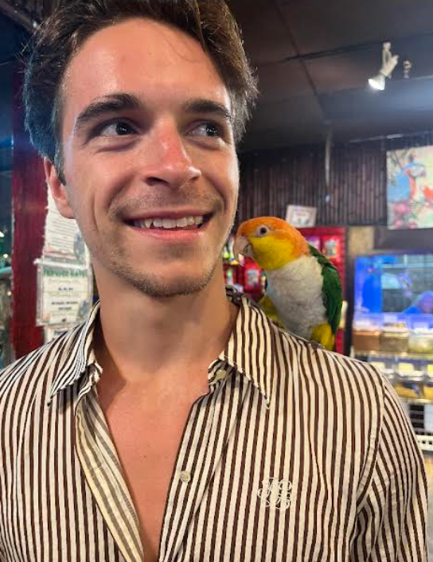

A Little About Me...
I love to spend free time reading and being outside! Right now, Eragon is the series I'm on; it describes the mythical adventures of a dragon rider! Anything related to physics or engineering always intrigues me. Also, if it's got wheels I'll ride it - Skateboards, longboards, motorbikes etc...I enjoy it all! Action based anime is endlessly entertaining to me - I love how much context the fights have, you have to know a lot of the back story for every frame to make sense!

Current Antics!
If I don't have my nose in a book, wheels under me, or anime on the TV, I'm usually working. I work full time at a coffee factory & cafe, the free caffeine is welcome! Saturday and Sunday mornings you can find me at a horse barn cleaning stalls for an extra buck! Oh how I hope this class can help me with that.
Where's My Drive?
My interest in computer science and coding took root when building a game on Scratch during highschool. Since then I’ve been teaching myself all I can on the amazing science of using transistors and electricity to generate such amazing advances in technology, and will always contemplate these advances in wonderment.